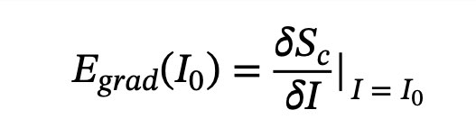
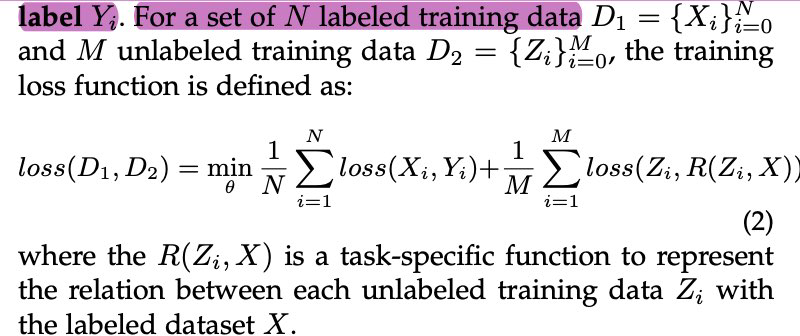

Backpropamine¶
- @miconiBackpropamineTrainingSelfmodifying2020
ABSTRACT¶
- The impressive lifelong learning in animal brains is primarily enabled by plastic changes in synaptic connectivity
- Importantly, these changes are not passive, but are actively controlled by neuromodulation, which is itself under the control of the brain
- The resulting self-modifying abilities of the brain play an important role in learningand adaptation, and are a major basis for biological reinforcement learning
- artificial neural networks with such neuromodulated plasticity can be trained withgradient descen
- differentiable Hebbian plasticity
- neuromodulated plasticity improves the performance of neural networks on bothreinforcement learning and supervised learning tasks
- neuromodulated plastic LSTMs with millions of parameters outperform standard LSTMs on a benchmark language modeling task
BACKGROUND: DIFFERENTIABLE HEBBIAN PLASTICITY¶
- (Miconi, 2016; Miconi et al., 2018)
- allows gradient descent to optimize not just the weights, but also the plasticity of each connection
- each connection in the network is augmented with a Hebbian plastic component that grows and decays automatically as a result of ongoing activity. In effect, each connection contains a fixed and a plastic component:
- Hebbi,j is initialized to zero at the beginning of each episode/lifetime, and is updatedautomatically
- purely episodic/intra-life quantity
- wi,j, fi,j and ⌘ are the structural components of the network, which are optimizedby gradient descent between episodes/lifetimes to minimize the expected loss overan episode.
- Clip(x) in Eq. 2 is any function or procedure that constrains Hebbi,j to the [1, 1]range, to negate the inherent instability of Hebbian learning.
- distinction between the ⌘ and fi,j parameters: ⌘ is the intra-life "learning rate" ofplastic connections
- determines how fast new information is incorporated into the plastic component
- fi,j is a scale parameter, which determines the maximum magnitude of the plasticcomponent (since Hebbi,j is constrained to the [-1,1] range)
- in contrast to other approaches using uniform plasticity (Schmidhuber, 1993a),including "fast weights" (Ba et al., 2016), the amount of plasticity in each connection(represented by fi,j ) is trainable, allowing the meta-optimizer to design complexlearning strategies
- implementing a plastic recurrent network only requires less than four additional linesof code over a standard recurrent network implementation
BACKPROPAMINE: DIFFERENTIABLE NEUROMODULATION OF PLASTICITY¶
- plasticity is modulated on a moment-to-moment basis by a network controlled neuromodulatory signal M (t)
- The computation of M (t) could be done in various ways; at present, it is simply asingle scalar output of the network, which is used either directly (for the simple RLtasks) or passed through a meta-learned vector of weights (one for eachconnection, for the language modeling task)
SIMPLE NEUROMODULATION¶
- make the (global) ⌘ parameter depend on the output of one or more neurons in the network
- Because ⌘ essentially determines the rate of plastic change, placing it under network control allows the network to determine how plastic connections should beat any given time.
- only modification to the equations above in this simple neuromodulation variant is to replace ⌘ in Eq. 2 with the network-computed, time-varying neuromodulatory signalM (t)

RETROACTIVE NEUROMODULATION AND ELIGIBILITY TRACES¶
- alternative neuromodulation scheme that takes inspiration from the short-term retroactive effects of neuromodulatory dopamine on Hebbian plasticity in animalbrains
- dopamine was shown to retroactively gate the plasticity induced by past activity,within a short time window of about 1s (Yagishita et al., 2014; He et al., 2015; Fisheret al., 2017; Cassenaer & Laurent, 2012)
- Thus, Hebbian plasticity does not directly modify the synaptic weights, but creates a fast-decaying "potential" weight change, which is only incorporated into the actual weights if the synapse receives dopamine within a short time window
- eligibility trace
- keeping memory of which synapses contributed to recent activity, while thedopamine signal modulates the transformation of these eligibility traces into actualplastic changes.
